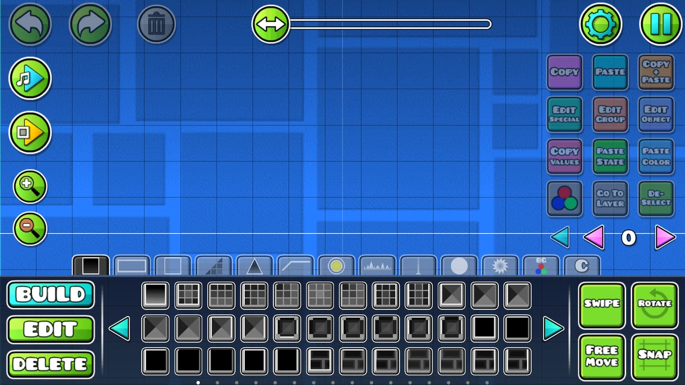
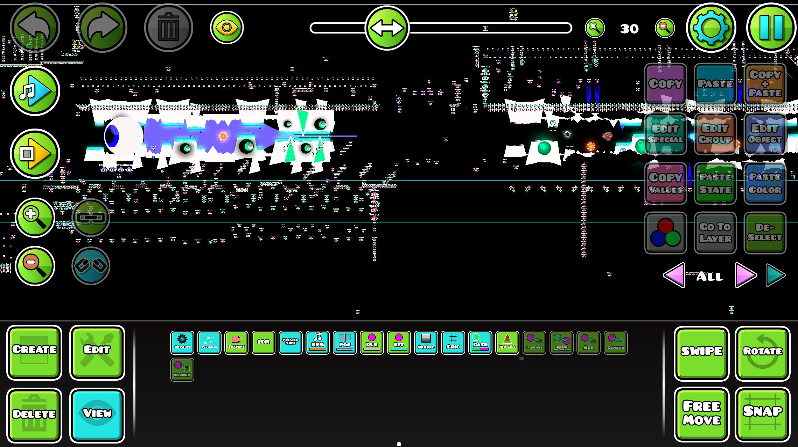

Qu'est-ce que Geometry Dash ?
petite description de Geometry Dash
Geometry Dash est un jeu de plateforme développé par RobTop Games. Il a été publié pour la première fois en 2013 et est devenu rapidement populaire grâce à son gameplay simple mais addictif. Le but du jeu est de guider un petit cube, ou d'autres modes de jeu comme le Ship, le Swing ou le Spider, à travers des niveaux remplis d'obstacles, en sautant et en évitant les pièges pour atteindre la fin du niveau.
Les différentes versions de Geometry Dash
Aperçu des différentes versions
Depuis sa sortie, Geometry Dash a connu plusieurs mises à jour et versions, chacune ajoutant de nouveaux niveaux, fonctionnalités et modes de jeu. Voici un aperçu des différentes versions de Geometry Dash :
- Geometry Dash (2013) : La version originale du jeu, disponible sur iOS et Android.
- Geometry Dash Meltdown (2015) : Une version gratuite avec de nouveaux niveaux et une bande-son différente.
- Geometry Dash World (2016) : Une autre version gratuite avec des niveaux supplémentaires et des fonctionnalités en ligne.
- Geometry Dash SubZero (2017) : Une version gratuite avec des niveaux sur le thème de l'hiver et une bande-son unique.
- Geometry Dash Lite (2014) : Une version gratuite avec un nombre limité de niveaux pour les joueurs qui veulent essayer le jeu avant d'acheter la version complète ou pour les gens qui ne veulent pas dépenser de l'argent dans un jeu.
Quelques niveaux de Geometry Dash
Aperçu de tous les niveaux officiels de RobTop
Geometry Dash
- Stereo Madness
- Back on Track
- Polargeist
- Dry Out
- Base After Base
- Can't Let Go
- Jumper
- Cycles
- Time Machine
- xStep
- Clutterfunk
- Theory of Everything
- Electroman Adventures
- Clubstep
- Electrodynamix
- Hexagon Force
- Blast Processing
- Theory of Everything 2
- Geometrical Dominator
- Deadlocked
- Fingerdash
- Dash
Geometry Dash Meltdown
Geometry Dash SubZero
Geometry Dash World (monde 1)
Geometry Dash World (monde 2)
Le niveau secret de Geometry Dash
Le mode Tower de Geometry Dash
Les difficultés de niveaux
Tous ces niveaux sont classés dans différentes catégories
- Auto : Ce sont des niveaux qui ne nécessitent pas de clic de la part du joueur. Le but de ces niveaux est de permettre au joueur d'admirer le gameplay d'un niveau sans avoir à cliquer, ce qui risque de faire mourir le joueur et donc de ne pas pouvoir admirer le niveau dans sa globalité.
- Easy : Ce sont des niveaux qui sont très faciles à réussir et qui permettent aux nouveaux joueurs de s'entraîner sur les mécaniques de base du jeu.
- Normal : Ce sont des niveaux de difficulté moyenne qui offrent un défi raisonnable pour les joueurs intermédiaires.
- Hard : Ce sont des niveaux compliqués qui nécessitent une assez bonne maîtrise des mécaniques du jeu pour être réussis.
- Harder : Ce sont des niveaux encore plus durs que les niveaux "Hard", qui demandent une précision plus grande et une bonne coordination avec la musique pour être réussis.
- Insane : Ce sont des niveaux difficiles qui poussent les joueurs à atteindre un nouveau palier de difficulté. Ils nécessitent une grande maîtrise des mécaniques du jeu et de la patience pour être réussis.
- Demon : Ce sont les niveaux les plus difficiles du jeu, qui demandent une précision
extrême, une excellente coordination avec la musique et une grande patience pour être réussis. Ils
sont souvent considérés comme des défis ultimes pour les joueurs de Geometry Dash.
- Easy Demon : Ce sont des niveaux de difficulté "Demon" qui sont plus accessibles que les autres niveaux "Demon". Ils offrent un défi plus raisonnable pour les joueurs qui cherchent à s'attaquer à des niveaux "Demon" sans qu'ils soient trop difficiles.
- Medium Demon : Ce sont des niveaux de difficulté "Demon" qui sont plus difficiles que les "Easy Demon", mais qui restent plus accessibles que les autres niveaux "Demon". Ils offrent un défi plus important pour les joueurs qui cherchent à s'attaquer à des niveaux "Demon" sans qu'ils soient trop difficiles.
- Hard Demon : Ce sont des niveaux de difficulté "Demon" qui sont très difficiles et qui nécessitent une grande maîtrise des mécaniques du jeu pour être réussis. Ils offrent un défi important pour les joueurs qui cherchent à s'attaquer à des niveaux "Demon" sans viser les niveaux les plus extrêmes.
- Extreme Demon : Ce sont les niveaux de difficulté "Demon" les plus difficiles, qui nécessitent une précision extrême, une excellente coordination avec la musique et une grande patience pour être réussis. Ils sont souvent considérés comme les véritables défis ultimes pour les joueurs de Geometry Dash.
- NA : Ce sont des niveaux qui ne sont pas classés dans une catégorie spécifique.
L'éditeur de niveaux
Dans Geometry Dash, il existe un éditeur de niveaux
L'éditeur de niveaux de Geometry Dash permet aux joueurs de créer leurs propres niveaux personnalisés en utilisant une variété d'outils et d'options de personnalisation (comme on peut le voir sur les images ci-dessous). Les joueurs peuvent choisir parmi une large gamme d'objets, de décors et de musiques pour créer des niveaux uniques et créatifs. Une fois qu'un niveau est créé, les joueurs peuvent le partager avec la communauté en ligne, où d'autres joueurs peuvent le jouer, le noter et le commenter. L'éditeur de niveaux est un élément clé de la popularité de Geometry Dash, car il permet aux joueurs de s'exprimer créativement et de partager leurs créations avec d'autres membres de la communauté.


Il y a un mod (BetterEdit) qui modifie l'éditeur pour ajouter plus d'options de personnalisation.
Les accomplissements des joueurs
Dans Geometry Dash, il existe une poignée de joueurs qui s'amusent à terminer les niveaux les plus durs du jeu
Ces niveaux sont classés dans une liste que l'on appelle "la Demon List". C'est la liste des niveaux les plus difficiles qui ont été terminés par des joueurs. Il existe aussi d'autres listes, comme "la liste des futurs top 1", qui regroupe les niveaux parmi les plus difficiles du monde et qui n'ont pas encore été terminés.
Le but de certains joueurs est d'atteindre le plus haut niveau mondial possible.
Ce classement évolue régulièrement au fil des nouveaux exploits des joueurs.
Les systèmes de notation
Dans Geometry Dash, il existe un système de notation
Il existe plusieurs types de notation comme :
- La notation par la popularité : c'est un système de notation basé sur le nombre de téléchargements d'un niveau, c'est-à-dire le nombre de fois où il a été téléchargé par les joueurs.
- La notation par la qualité : c'est un système de notation basé sur la qualité d'un
niveau. Ce système fonctionne grâce à RobTop (le créateur du jeu) : c'est lui qui décide
quel niveau sera noté et comment.
- Featured : Des niveaux beaux, avec un bon gameplay, ou un peu des deux. Exemple : "ReTraY" créé par DiMaViKuLov26.
- Epic : Des niveaux beaux avec un bon gameplay. Exemple : "iSpyWithMyLittleEye" créé par Voxicat.
- Legendary : Des niveaux particulièrement marquants. Exemple : "bussin" créé par Connot.
- Mythic : Des niveaux qui sont considérés comme exceptionnels. Exemple : "Orbit" créé par MindCap.
- La notation par la difficulté : Ce système a déjà été présenté plus tôt, avant la présentation de l'éditeur de niveau.
- La notation par likes / dislikes : c'est un système basé sur le nombre de likes et de dislikes que les joueurs ont mis sur un niveau.
Différents modes de jeu
Il existe plusieurs types de gamemodes :
" Clic " = appuyer sur l'écran (sur téléphone) ou appuyer sur le clavier (sur PC) / " Hold " = garder le clic / " l'icône " = c'est le joueur
- Cube : quand on clique, l'icône saute, et quand on hold, l'icône saute sans s'arrêter.

- Ship : quand on hold, l'icône vole vers le haut, et quand on ne hold pas, l'icône vole vers le bas.

- Ball : quand on clique, l'icône change sa gravité.

- Ufo : quand on clique, l'icône saute (comme l'oiseau dans Flappy Bird).

- Wave : quand on hold, l'icône monte en diagonale, et quand on ne hold pas, l'icône descend en diagonale.

- Robot : c'est comme le cube, mais plus on hold, plus l'icône saute haut (il y a quand même une limite).

- Spider : quand on clique, l'icône se téléporte au plafond, et si elle y est déjà, elle se téléporte au sol.

- Swing : c'est comme la ball sauf que l'on peut changer la gravité en l'air.

Il existe pour "le ship", "la wave" et "le swing" une façon particulière de contrôler le mouvement,
c'est-à-dire de faire en sorte que l'icône suive une trajectoire droite.
Pour faire cela, le joueur doit cliquer de façon régulière et rapide (il faut faire en sorte que le clic
ait la même durée que le temps entre la fin du clic et le prochain).
La folie des créateurs
Comment des humains ont fait de Geometry Dash un chef-d'œuvre ?
Je vais vous présenter les levels ( = Niveaux ) créés par la communauté :
- Back on Dash : C'est un remix créé par Viprin du level "Back on Track".
- Change of Scene : C'est un level créé par Bli ; le niveau est fait en 2 parties qui doivent être choisies au début du level.
- Limbo : C'est un level créé par MindCap. Ce level est connu pour sa difficulté exceptionnelle, car c'est le plus dur level "Memory" (il faut apprendre chaque clic par cœur avec le bon timing), mais il est surtout connu pour son final où l'on doit suivre une clé qui se mélange avec d'autres tout en devant suivre un parcours très serré en mini wave.
- White Space : C'est un level créé par Xender Game, il est connu pour son design et l'histoire qu'il raconte.
Je ne vais pas citer tous les levels incroyables, mais je voulais partager quelques niveaux que j'apprécie.
Conclusion
Geometry Dash n'est pas seulement un jeu de cube qui saute.
Geometry Dash n'est pas seulement un jeu de cube qui saute, c'est aussi une communauté passionnée qui crée des niveaux incroyables et des records du monde.
Le monde du jeu vidéo a évolué, et Geometry Dash est resté le même depuis sa sortie en 2013 ; il continue d'inspirer et de défier les joueurs du monde entier.
Pour en savoir plus
Description du gameplay plus détaillée
Plusieurs pages sont disponibles pour en savoir plus sur le gameplay de Geometry Dash.
Me contacter
Contactez-moi à l'adresse suivante :
matys.delaunay@orange.fr
Uniquement pour des remarques, des questions, des corrections ou des suggestions par rapport au site.